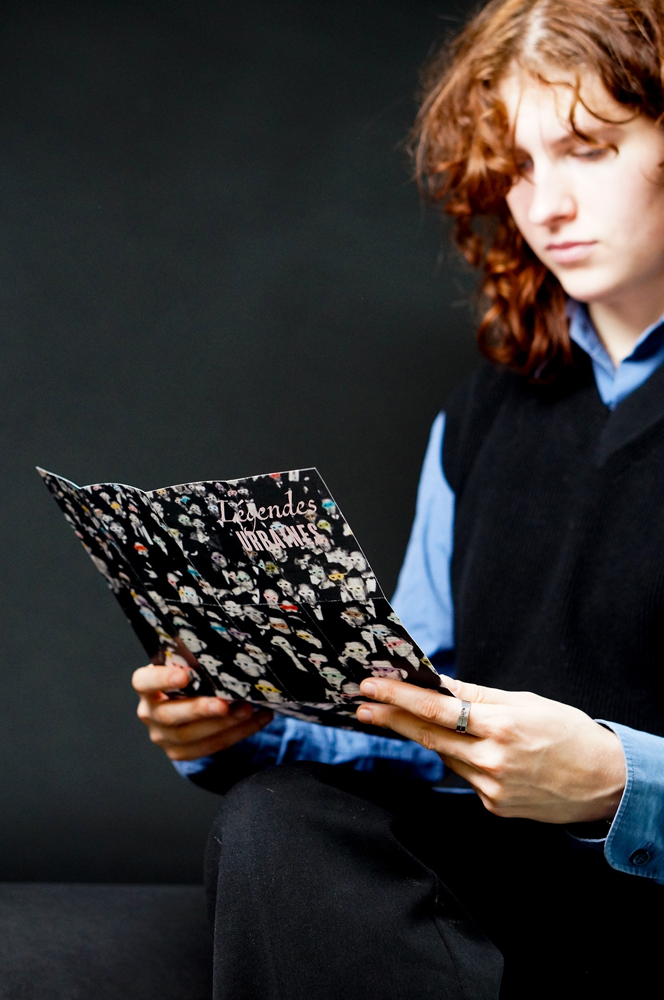
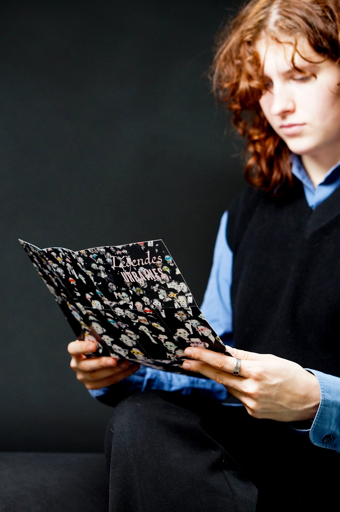
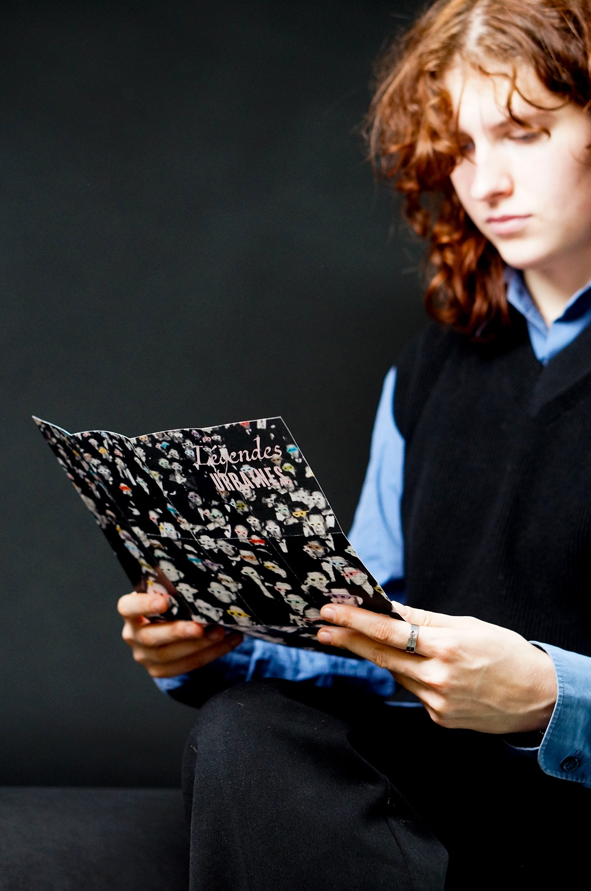
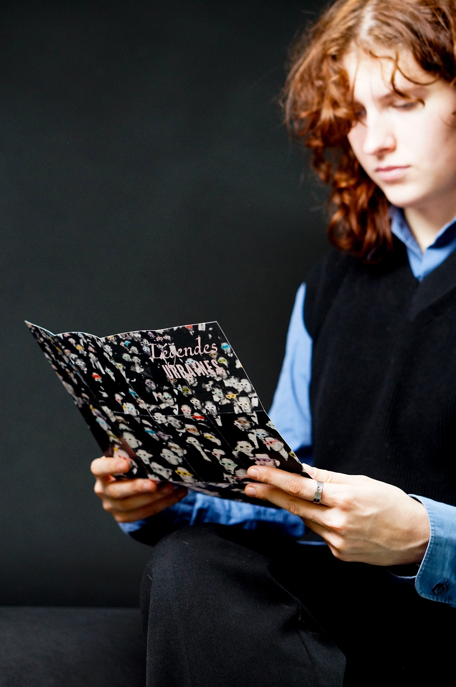
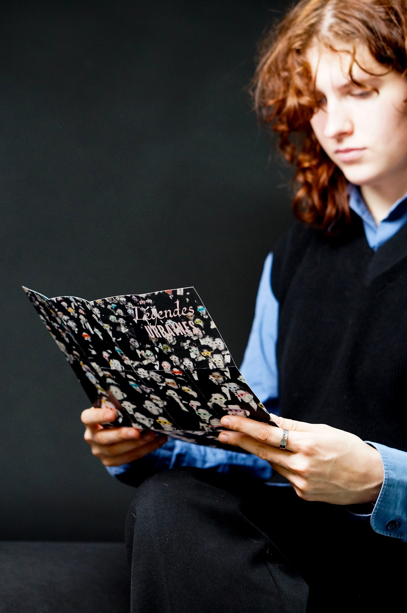

Dans un monde où la désinformation bat son plein, un projet de revue journalistique, anecdotique, a vu le jour intitulé « Légendes Urbaines » dans le but de faire un compte-rendu des rumeurs qui passent de bouche à oreille et qui effraient la population.J’ai donc souhaité démontrer l'absurdité des légendes grâce, tout d’abord, aux visuels. Ce sentiment est renforcé par la composition, car en effet, cet effet de liste montre la pluralité des rumeurs absurdes humaines.
In a world where misinformation is rampant, a new journalistic project titled Urban Legends has emerged to counter the spread of rumors that circulate by word of mouth, often stirring public fear. My aim was to highlight the absurdity of these myths, starting with the visuals. This effect is reinforced by the composition, as the list-like format emphasizes the sheer variety of outlandish human rumors.
Novembre 2023 - Projet de 1e année de DnMade.
